Code
plot.ts(var_ts , main = "", xlab = "")
In the previous ARIMA/SARIMA modeling section, we analyzed a univariate time series of monthly terrorist attacks in the US that occurred from 1970 to 2020. Although the SARIMA model performed better than the ARIMA model, due to the added seasonal Moving Average term, we can gauge our understanding of the monthly terrorist attacks better by including endogenous variables! Endogenous variables are those that are determined within the system being studied and are influenced by other variables in the system. These variables are typically modeled as being interdependent and are affected by changes in the values of other variables. In the case of terrorist attacks and casualties suffered from them, potential endogenous variables could include USA military expenditure, non-immigrant admissions data, and the performance of major weapons contracts, including Lockheed Martin, Boeing, and Raytheon Technologies. With the help of a literature review, it can be reinforced thoroughly and plausibly that the aforementioned endogenous variables have, in fact, not only been employed but also found to have effects related to terrorism in prior research.
The Stimson Study Group’s Report on Counterterrorism Spending (Counterterrorism Spending and Center 2018) in the post-9/11 era provides valuable insights into the amount of resources the United States devotes to counterterrorism efforts. The report found that the US government spent over USD2.8 trillion on counterterrorism efforts from 2002 to 2017, which represents a significant portion of the country’s overall military budget during that period. Specifically, the report notes that counterterrorism spending accounted for 17% to 23% of the US defense budget each year between 2002 and 2017. Hartung (2021) (Hartung 2021) found that the “Global War on Terror”, which emerged in the early 2000s as a result of the 9/11 attacks, had a significant impact on the political environment, resulting in a surge in the Pentagon’s budget, the largest component of the US military budget. This increased funding was largely directed towards military contractors, Lockheed Martin, Boeing, General Dynamics, Raytheon Technologies, and Northrop Grumman, who were enlisted to aid in the efforts. Since Fiscal Year 2001, the total expenditures of the Pentagon for all purposes have surpassed USD14.1 trillion (measured in 2021 dollars). Out of this sum, USD4.4 trillion was used for weapons procurement and research and development (R&D), which mainly benefited corporate contractors. The rest of the funds were utilized for paying and providing benefits to military and civilian personnel and other expenses, necessary for operating and maintaining the United States military. Congressional Research Service (CRS) estimates that in FY2020, the spending for contractors grew to $420 billion - well over half of the total Pentagon budget. Therefore, the biggest financial beneficiaries of the post-9/11 military spending surge have been the aforementioned weapons contractors.
Furthermore, several papers have discussed and analyzed the relation between military spending or counterterrorism efforts with transnational terrorism prior to the 9/11 attacks. Li and Schaub (2004) (Li and Schaub 2004) employed GOVCAPABILITY, a control variable in their Pooled Time-Series Analysis , that comprised military manpower and military expenditures for 112 countries from 1975 to 1997. Because the variable captured state military and economic strength, it represented a proxy that the government could use for combating terrorism. Gaibulloev, K., Sandler, T., & Sul, D. (2014) (Gaibulloev, Sandler, and Sul 2014) challenged extant literature about terrorism and its impact on economic growth that suffered from Nickell Bias, a type of bias that arises in statistical models when the independent variable is measured with error, and cross-sectional dependence, a statistical issue that arises in panel data analysis when the individual units (e.g., countries or firms) in the panel are not completely independent of one another. They mentioned that cross-sectional dependence is apt to affect other variables, such as democracy, threat, military spending, and financial measures. However, when Nickell bias and cross-sectional dependence are addressed, terrorism has no influence whatsoever on economic growth.
Therefore, the perused literature about counterterrorism and military spending underscores the importance of counterterrorism efforts, including funding weapons contractors, in shaping the country’s military spending priorities, particularly in the wake of the 9/11 terrorist attacks. By highlighting the amount of resources devoted to counterterrorism, these reports and papers help us understand how the overall US budget and military budget are allocated and the policy decisions that drive those allocations. However, it might also possible that during the VAR model building phase of this section, we find that military spending may not be a significant indicator of the number of casualties stemming from terrorist attacks in the Global Terrorism Database™ (GTD) (“Codebook Methodology Inclusion Criteria and Variables - UMD,” n.d.).
Secondly, Nowrasteh (2019) (Nowrasteh 2019) found, by carefully analyzing the GTD, that the chance of being murdered by a tourist on a B visa, the most common tourist visa, is about 1 in 4.1 million per year. Compared to foreign‐born terrorists, the chance of being murdered by a native‐born terrorist is about 1 in 28 million per year. Moreover, there were 192 foreign‐born terrorists, relative to the 788 native-born terrorists, who planned, attempted, or carried out attacks on U.S. soil from 1975 through 2017. Through a cost-benefit risk analysis, it was also found that the combined human, property, business, and economic costs of terrorism from 1975 through 2017 are estimated at USD216.58 billion. Spread over 43 years, the average annual cost of terrorism is USD5.04 billion, which is about one‐hundredth the minimum estimated yearly benefit of USD553.9 billion from immigration and tourism. Therefore, foreign‐born terrorism on U.S. soil is a low‐probability event that imposes high costs on its victims, despite relatively small risks.
Using a VAR model over an ARIMAX model for this research has a multitude of benefits, including:
Simultaneous modeling of multivariate time series: VAR allows for the simultaneous modeling of multiple endogenous variables, whereas ARIMAX (Autoregressive Integrated Moving Average with Explanatory Variables) can only model one dependent variable at a time. This means that VAR can capture the complex relationships between multiple variables that may be influencing each other.
Better handling of lags: VAR can handle multiple lags in the data more efficiently than ARIMAX. This is important in the case of studying the impact of terrorist attacks, as the effects of a single attack may persist over a longer period of time and may have delayed impacts on different variables.
More robust to missing data: VAR can handle missing data more effectively than ARIMAX, as it does not require the same level of complete data in order to estimate the model parameters. This is particularly relevant in the case of studying the impact of terrorist attacks, as data may be missing or incomplete for certain variables in certain time periods.
Better captures dynamic relationships: VAR is better suited for capturing the dynamic relationships between variables over time, whereas ARIMAX can only capture the static relationships between variables at a particular point in time. This is important in the case of studying the impact of terrorist attacks, as the relationships between variables may change over time due to factors such as changes in government policies or public opinion.
No clear seasonality: Another reason why the VAR model is justified is that there may not be a clear seasonality pattern in the data related to terrorist attacks. This means that traditional time-series models may not be effective in capturing the complex relationships between the variables. The VAR model, on the other hand, does not rely on a specific seasonal pattern and can account for the complex relationships between variables without requiring seasonal adjustments. Moreover, the data that will be analyzed is aggregated yearly from 1970 to 2020, which makes it more difficult to identify and capture seasonal patterns. Yearly data may also be influenced by other factors that are not related to seasonality, such as long-term trends or cyclical patterns, that occur over longer periods of time. This can make it more challenging to distinguish between seasonal effects and other underlying factors that may be driving the data.
Non-linearity: The relationships between variables in the case of terrorist attacks may not be linear, and traditional linear models may not be able to capture the non-linear effects. The VAR model is capable of modeling non-linear relationships between variables and can account for the complex interactions that may exist between them.
Given the discussed Literature Review above, we shall divide our analysis into two segments, with VAR and ARIMAX models applied to both. The first segment shall forecast the number of terrorist attacks in the US using all the data available, from 1970-2020, and the second segment shall forecast the number of terrorist attacks in the US using only Post-9/11 attacks data, from 2001-2020. The reason 2001 is included is to ensure that the analysis captures the full impact of the 9/11 attacks, immediately before and after it, on terrorist activity in the US.
Another important differentiator between both VAR models and ARIMAX models is that only the ARIMAX models shall account for all variables collected for the project, including Non-Immigrant Entrants data from the Department of Homeland Security. This is because, as per the literature review, tourism, which is generalized to foreign-born terrorists in this analysis, does not seem to have a significant impact on the likelihood of terrorist attacks on U.S. soil, compared to overall US Military Expenditure. Therefore, this section will help us prove whether the non-immigration variables have a significant effect on the yearly number of terrorist attacks in the US.
Following graphs shall help make sense of the roadmap that follows in this analysis:
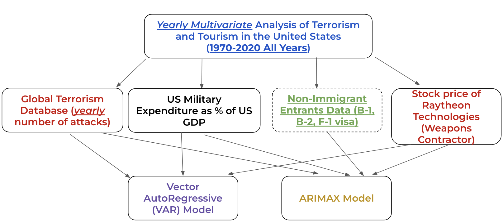
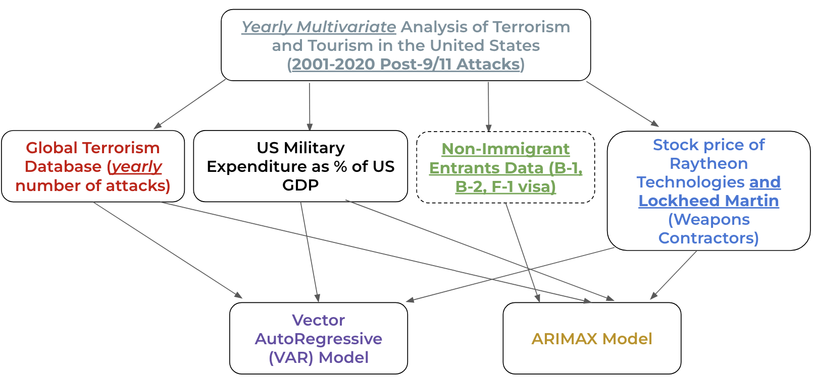
plot.ts(var_ts , main = "", xlab = "")
# create scatterplot matrix using plotly
fig <- plot_ly(
data = as.data.frame(var_ts),
type = "splom",
diagonal = list(visible = FALSE),
dimensions = list(
list(label = "# Attacks", values = ~num_attacks),
list(label = "B-2 Visa", values = ~Pleasure),
list(label = "B-1 Visa", values = ~Business),
list(label = "F-1 Visa", values = ~Students),
list(label = "Military Exp", values = ~milexp.gdp),
list(label = "RTX", values = ~RTX)
)
) %>%
layout(hovermode = "x")
# customize layout
fig <- fig %>%
layout(
title = "Scatterplot Matrix of VAR Model Variables (Pre and Post-9/11)",
xaxis = list(title = ""),
yaxis = list(title = "")
)
# display plot
fig#gtd_dhs_sipri_rtx <- subset(gtd_dhs_sipri_rtx, select=-c(Business, Pleasure, Students))
# convert df back to matrix
ts_matrix <- as.matrix(gtd_dhs_sipri_rtx[, 3:5])
# convert the matrix to a time series object with a yearly frequency
var_ts <- ts(ts_matrix, frequency = 1,
start = 1970)
# split into train and test sets
set.seed(29830)
train_idx <- sample(nrow(var_ts), 0.9 * nrow(var_ts))
train <- var_ts[train_idx, ]
test <- var_ts[-train_idx, ]
# Fit Lasso regression model with cross-validation
# cv_fit <- cv.glmnet(train[, 2], train[, 1], alpha = 1)
#
# # Extract selected variables
# cv_fits <- as.data.frame(as.matrix(coef(cv_fit)))
# to_include <- rownames(cv_fits)[cv_fits$s1 != 0]Here we use the VARselect() function to find the best p to fit VAR(p). We will choose a maximum lag of 10 and check which p value returns lowest AIC.
(var_result <- VARselect(var_ts, lag.max = 10, type = "both"))$selection
AIC(n) HQ(n) SC(n) FPE(n)
10 10 1 10
$criteria
1 2 3 4 5
AIC(n) 6.218555e+01 6.221758e+01 6.247328e+01 6.263055e+01 6.268341e+01
HQ(n) 6.241384e+01 6.258284e+01 6.297552e+01 6.326976e+01 6.345959e+01
SC(n) 6.281247e+01 6.322065e+01 6.385250e+01 6.438592e+01 6.481493e+01
FPE(n) 1.019603e+27 1.065015e+27 1.410394e+27 1.727137e+27 1.960066e+27
6 7 8 9 10
AIC(n) 6.243987e+01 6.271077e+01 6.289237e+01 6.233062e+01 6.031548e+01
HQ(n) 6.335303e+01 6.376089e+01 6.407947e+01 6.365469e+01 6.177652e+01
SC(n) 6.494754e+01 6.559458e+01 6.615234e+01 6.596673e+01 6.432774e+01
FPE(n) 1.719961e+27 2.666183e+27 4.086231e+27 3.345728e+27 7.729491e+26Now, we will fit VAR(1), VAR(2), and VAR(3):
VAR(1) output:
summary(fit <- VAR(var_ts, p=1, type="both"))
VAR Estimation Results:
=========================
Endogenous variables: num_attacks, Pleasure, Business
Deterministic variables: both
Sample size: 50
Log Likelihood: -1772.497
Roots of the characteristic polynomial:
0.8827 0.5279 0.2543
Call:
VAR(y = var_ts, p = 1, type = "both")
Estimation results for equation num_attacks:
============================================
num_attacks = num_attacks.l1 + Pleasure.l1 + Business.l1 + const + trend
Estimate Std. Error t value Pr(>|t|)
num_attacks.l1 3.087e-01 5.832e-02 5.294 3.44e-06 ***
Pleasure.l1 8.347e-07 5.901e-07 1.415 0.164038
Business.l1 1.238e-05 7.894e-06 1.568 0.123817
const 6.014e+01 1.069e+01 5.625 1.12e-06 ***
trend -3.400e+00 9.520e-01 -3.571 0.000861 ***
---
Signif. codes: 0 '***' 0.001 '**' 0.01 '*' 0.05 '.' 0.1 ' ' 1
Residual standard error: 20.62 on 45 degrees of freedom
Multiple R-Squared: 0.7746, Adjusted R-squared: 0.7545
F-statistic: 38.66 on 4 and 45 DF, p-value: 5.101e-14
Estimation results for equation Pleasure:
=========================================
Pleasure = num_attacks.l1 + Pleasure.l1 + Business.l1 + const + trend
Estimate Std. Error t value Pr(>|t|)
num_attacks.l1 7.069e+03 1.681e+04 0.421 0.6760
Pleasure.l1 1.027e+00 1.700e-01 6.039 2.73e-07 ***
Business.l1 -3.886e+00 2.275e+00 -1.708 0.0945 .
const -1.624e+06 3.081e+06 -0.527 0.6007
trend 5.757e+05 2.744e+05 2.098 0.0415 *
---
Signif. codes: 0 '***' 0.001 '**' 0.01 '*' 0.05 '.' 0.1 ' ' 1
Residual standard error: 5941000 on 45 degrees of freedom
Multiple R-Squared: 0.8944, Adjusted R-squared: 0.885
F-statistic: 95.26 on 4 and 45 DF, p-value: < 2.2e-16
Estimation results for equation Business:
=========================================
Business = num_attacks.l1 + Pleasure.l1 + Business.l1 + const + trend
Estimate Std. Error t value Pr(>|t|)
num_attacks.l1 7.075e+02 2.103e+03 0.336 0.7381
Pleasure.l1 2.125e-02 2.128e-02 0.999 0.3232
Business.l1 3.292e-01 2.847e-01 1.157 0.2535
const -8.672e+04 3.855e+05 -0.225 0.8230
trend 7.894e+04 3.433e+04 2.299 0.0262 *
---
Signif. codes: 0 '***' 0.001 '**' 0.01 '*' 0.05 '.' 0.1 ' ' 1
Residual standard error: 743400 on 45 degrees of freedom
Multiple R-Squared: 0.9077, Adjusted R-squared: 0.8995
F-statistic: 110.6 on 4 and 45 DF, p-value: < 2.2e-16
Covariance matrix of residuals:
num_attacks Pleasure Business
num_attacks 425 -1.755e+07 -2.952e+06
Pleasure -17552819 3.530e+13 3.916e+12
Business -2952322 3.916e+12 5.527e+11
Correlation matrix of residuals:
num_attacks Pleasure Business
num_attacks 1.0000 -0.1433 -0.1926
Pleasure -0.1433 1.0000 0.8865
Business -0.1926 0.8865 1.0000VAR(2) output:
summary(fit <- VAR(var_ts, p=2, type="both"))
VAR Estimation Results:
=========================
Endogenous variables: num_attacks, Pleasure, Business
Deterministic variables: both
Sample size: 49
Log Likelihood: -1719.76
Roots of the characteristic polynomial:
0.8629 0.7233 0.7233 0.4716 0.4716 0.03415
Call:
VAR(y = var_ts, p = 2, type = "both")
Estimation results for equation num_attacks:
============================================
num_attacks = num_attacks.l1 + Pleasure.l1 + Business.l1 + num_attacks.l2 + Pleasure.l2 + Business.l2 + const + trend
Estimate Std. Error t value Pr(>|t|)
num_attacks.l1 2.669e-01 1.141e-01 2.338 0.024333 *
Pleasure.l1 1.513e-07 8.588e-07 0.176 0.861004
Business.l1 6.099e-06 8.841e-06 0.690 0.494203
num_attacks.l2 -2.348e-01 5.596e-02 -4.196 0.000142 ***
Pleasure.l2 1.114e-06 9.178e-07 1.214 0.231616
Business.l2 1.446e-05 8.930e-06 1.619 0.113127
const 9.813e+01 1.136e+01 8.642 8.86e-11 ***
trend -5.585e+00 8.663e-01 -6.447 1.00e-07 ***
---
Signif. codes: 0 '***' 0.001 '**' 0.01 '*' 0.05 '.' 0.1 ' ' 1
Residual standard error: 15.33 on 41 degrees of freedom
Multiple R-Squared: 0.7942, Adjusted R-squared: 0.7591
F-statistic: 22.6 on 7 and 41 DF, p-value: 3.428e-12
Estimation results for equation Pleasure:
=========================================
Pleasure = num_attacks.l1 + Pleasure.l1 + Business.l1 + num_attacks.l2 + Pleasure.l2 + Business.l2 + const + trend
Estimate Std. Error t value Pr(>|t|)
num_attacks.l1 -1.154e+04 4.545e+04 -0.254 0.80090
Pleasure.l1 1.086e+00 3.419e-01 3.175 0.00284 **
Business.l1 -1.374e+00 3.520e+00 -0.390 0.69825
num_attacks.l2 1.184e+04 2.228e+04 0.531 0.59808
Pleasure.l2 -5.633e-02 3.654e-01 -0.154 0.87827
Business.l2 -2.950e+00 3.556e+00 -0.830 0.41156
const -1.615e+06 4.521e+06 -0.357 0.72284
trend 6.223e+05 3.449e+05 1.804 0.07856 .
---
Signif. codes: 0 '***' 0.001 '**' 0.01 '*' 0.05 '.' 0.1 ' ' 1
Residual standard error: 6103000 on 41 degrees of freedom
Multiple R-Squared: 0.8972, Adjusted R-squared: 0.8797
F-statistic: 51.13 on 7 and 41 DF, p-value: < 2.2e-16
Estimation results for equation Business:
=========================================
Business = num_attacks.l1 + Pleasure.l1 + Business.l1 + num_attacks.l2 + Pleasure.l2 + Business.l2 + const + trend
Estimate Std. Error t value Pr(>|t|)
num_attacks.l1 -4.733e+02 5.638e+03 -0.084 0.9335
Pleasure.l1 2.071e-02 4.242e-02 0.488 0.6279
Business.l1 7.792e-01 4.367e-01 1.784 0.0818 .
num_attacks.l2 1.007e+03 2.764e+03 0.364 0.7175
Pleasure.l2 1.762e-03 4.534e-02 0.039 0.9692
Business.l2 -5.502e-01 4.411e-01 -1.247 0.2194
const -1.522e+05 5.609e+05 -0.271 0.7875
trend 9.085e+04 4.279e+04 2.123 0.0398 *
---
Signif. codes: 0 '***' 0.001 '**' 0.01 '*' 0.05 '.' 0.1 ' ' 1
Residual standard error: 757100 on 41 degrees of freedom
Multiple R-Squared: 0.9105, Adjusted R-squared: 0.8952
F-statistic: 59.57 on 7 and 41 DF, p-value: < 2.2e-16
Covariance matrix of residuals:
num_attacks Pleasure Business
num_attacks 2.349e+02 -1.161e+07 -2.274e+06
Pleasure -1.161e+07 3.725e+13 4.082e+12
Business -2.274e+06 4.082e+12 5.732e+11
Correlation matrix of residuals:
num_attacks Pleasure Business
num_attacks 1.0000 -0.1242 -0.1960
Pleasure -0.1242 1.0000 0.8834
Business -0.1960 0.8834 1.0000VAR(3) output:
summary(fit <- VAR(var_ts, p=3, type="both"))
VAR Estimation Results:
=========================
Endogenous variables: num_attacks, Pleasure, Business
Deterministic variables: both
Sample size: 48
Log Likelihood: -1677.209
Roots of the characteristic polynomial:
0.9075 0.8361 0.8361 0.6494 0.5669 0.5669 0.4691 0.4691 0.1478
Call:
VAR(y = var_ts, p = 3, type = "both")
Estimation results for equation num_attacks:
============================================
num_attacks = num_attacks.l1 + Pleasure.l1 + Business.l1 + num_attacks.l2 + Pleasure.l2 + Business.l2 + num_attacks.l3 + Pleasure.l3 + Business.l3 + const + trend
Estimate Std. Error t value Pr(>|t|)
num_attacks.l1 3.398e-02 1.467e-01 0.232 0.8181
Pleasure.l1 5.179e-07 7.826e-07 0.662 0.5122
Business.l1 7.377e-06 8.045e-06 0.917 0.3651
num_attacks.l2 8.679e-02 1.103e-01 0.787 0.4364
Pleasure.l2 5.680e-07 1.068e-06 0.532 0.5979
Business.l2 1.079e-05 1.039e-05 1.038 0.3060
num_attacks.l3 -2.066e-01 6.179e-02 -3.343 0.0019 **
Pleasure.l3 2.518e-07 8.479e-07 0.297 0.7682
Business.l3 1.001e-05 8.376e-06 1.195 0.2396
const 1.190e+02 1.888e+01 6.302 2.45e-07 ***
trend -7.099e+00 1.179e+00 -6.020 5.91e-07 ***
---
Signif. codes: 0 '***' 0.001 '**' 0.01 '*' 0.05 '.' 0.1 ' ' 1
Residual standard error: 13.74 on 37 degrees of freedom
Multiple R-Squared: 0.85, Adjusted R-squared: 0.8094
F-statistic: 20.96 on 10 and 37 DF, p-value: 2.511e-12
Estimation results for equation Pleasure:
=========================================
Pleasure = num_attacks.l1 + Pleasure.l1 + Business.l1 + num_attacks.l2 + Pleasure.l2 + Business.l2 + num_attacks.l3 + Pleasure.l3 + Business.l3 + const + trend
Estimate Std. Error t value Pr(>|t|)
num_attacks.l1 -3.438e+04 6.741e+04 -0.510 0.61304
Pleasure.l1 1.084e+00 3.595e-01 3.014 0.00464 **
Business.l1 -1.803e+00 3.696e+00 -0.488 0.62850
num_attacks.l2 -1.503e+04 5.067e+04 -0.297 0.76846
Pleasure.l2 -2.556e-01 4.904e-01 -0.521 0.60541
Business.l2 -2.352e+00 4.773e+00 -0.493 0.62507
num_attacks.l3 4.440e+03 2.839e+04 0.156 0.87656
Pleasure.l3 3.296e-01 3.895e-01 0.846 0.40291
Business.l3 -3.226e-01 3.848e+00 -0.084 0.93364
const 2.443e+06 8.674e+06 0.282 0.77980
trend 4.864e+05 5.418e+05 0.898 0.37513
---
Signif. codes: 0 '***' 0.001 '**' 0.01 '*' 0.05 '.' 0.1 ' ' 1
Residual standard error: 6311000 on 37 degrees of freedom
Multiple R-Squared: 0.8995, Adjusted R-squared: 0.8724
F-statistic: 33.12 on 10 and 37 DF, p-value: 1.864e-15
Estimation results for equation Business:
=========================================
Business = num_attacks.l1 + Pleasure.l1 + Business.l1 + num_attacks.l2 + Pleasure.l2 + Business.l2 + num_attacks.l3 + Pleasure.l3 + Business.l3 + const + trend
Estimate Std. Error t value Pr(>|t|)
num_attacks.l1 -7.995e+02 8.425e+03 -0.095 0.925
Pleasure.l1 1.900e-02 4.493e-02 0.423 0.675
Business.l1 7.341e-01 4.618e-01 1.590 0.120
num_attacks.l2 -2.755e+03 6.332e+03 -0.435 0.666
Pleasure.l2 -1.137e-02 6.129e-02 -0.186 0.854
Business.l2 -4.329e-01 5.965e-01 -0.726 0.473
num_attacks.l3 1.477e+03 3.548e+03 0.416 0.680
Pleasure.l3 2.425e-02 4.868e-02 0.498 0.621
Business.l3 -1.421e-01 4.809e-01 -0.296 0.769
const 1.754e+04 1.084e+06 0.016 0.987
trend 9.116e+04 6.771e+04 1.346 0.186
Residual standard error: 788700 on 37 degrees of freedom
Multiple R-Squared: 0.9098, Adjusted R-squared: 0.8855
F-statistic: 37.34 on 10 and 37 DF, p-value: 2.617e-16
Covariance matrix of residuals:
num_attacks Pleasure Business
num_attacks 1.887e+02 -1.040e+07 -1.886e+06
Pleasure -1.040e+07 3.983e+13 4.403e+12
Business -1.886e+06 4.403e+12 6.221e+11
Correlation matrix of residuals:
num_attacks Pleasure Business
num_attacks 1.0000 -0.1199 -0.1741
Pleasure -0.1199 1.0000 0.8845
Business -0.1741 0.8845 1.0000# Define the number of folds for cross-validation
k <- 5
# Define the p values to test
p_values <- c(1, 2, 3)
# Split the data into k folds
cv_folds <- cut(seq(1, nrow(var_ts)), breaks = k, labels = FALSE)
# Initialize vectors to store RMSE and AIC values for each p value
rmse_vec <- numeric(length(p_values))
aic_vec <- numeric(length(p_values))
# Loop over p values and perform cross-validation
for (i in seq_along(p_values)) {
p <- p_values[i]
rmse_cv <- numeric(k)
aic_cv <- numeric(k)
for (j in 1:k) {
# Split the data into training and testing sets
train <- var_ts[cv_folds != j, ]
test <- var_ts[cv_folds == j, ]
# Fit the VAR model with the current p value
var_fit <- VAR(train, p = p)
# Make predictions for the testing set
pred <- predict(var_fit, n.ahead = nrow(test))$fcst
# Calculate RMSE and AIC for the current fold
rmse_cv[j] <- sqrt(mean((pred$num_attacks - test[,1])^2))
aic_cv[j] <- AIC(var_fit)
}
# Calculate the mean RMSE and AIC across all folds for the current p value
rmse_vec[i] <- mean(rmse_cv)
aic_vec[i] <- mean(aic_cv)
}
# Create a table of RMSE and AIC values for each p value
results_table <- tibble(p_values, rmse_vec, aic_vec)
# Print the results table
kable(results_table, format = "markdown",
col.names = c("P Values", "Mean RMSE (5 Folds)", "Mean AIC (5 Folds)"), align = "c", digits = 2
)| P Values | Mean RMSE (5 Folds) | Mean AIC (5 Folds) |
|---|---|---|
| 1 | 69.41 | 2839.88 |
| 2 | 95.77 | 2768.59 |
| 3 | 90.21 | 2702.07 |
The VAR(1) model outputs the lowest Mean RMSE of 69.405026 attacks from the 5-fold cross validation. However, it has the highest AIC score. Because test set performance is best and it is the simplest model, we shall choose the VAR(1) model as the best option.
final_var <- VAR(var_ts, p = 1)
(fit.pr = predict(final_var, n.ahead = 5, ci = 0.95)) # 5 years ahead $num_attacks
fcst lower upper CI
[1,] 74.99198 29.7166120 120.2674 45.27537
[2,] 62.51771 12.3013333 112.7341 50.21637
[3,] 56.71276 4.5370981 108.8884 52.17566
[4,] 53.80558 0.3106907 107.3005 53.49489
[5,] 52.18705 -2.3286201 106.7027 54.51567
$Pleasure
fcst lower upper CI
[1,] 28008600 15940797 40076403 12067803
[2,] 27732679 11205503 44259856 16527177
[3,] 27655150 8102498 47207803 19552652
[4,] 27668361 5880296 49456426 21788065
[5,] 27724860 4218078 51231642 23506782
$Business
fcst lower upper CI
[1,] 4142849 2619394 5666304 1523455
[2,] 4141639 2055830 6227448 2085809
[3,] 4166222 1698565 6633879 2467657
[4,] 4200017 1450247 6949786 2749770
[5,] 4236079 1269647 7202511 2966432fanchart(fit.pr) # plot prediction + error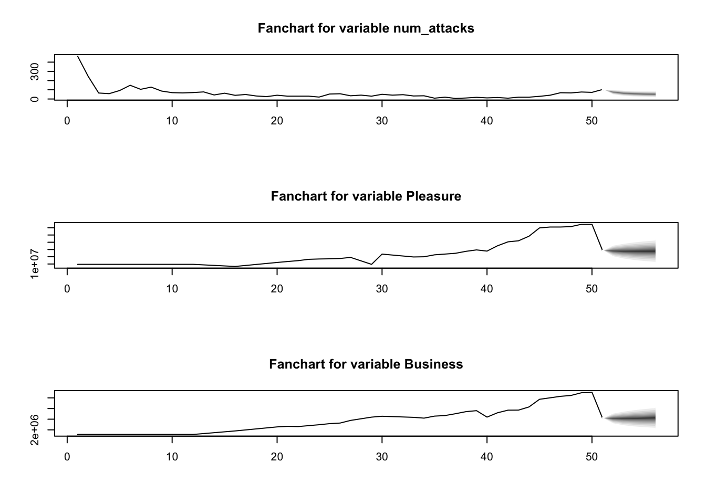
The above plot showcases the forecasts for each variable present in the VAR(1) model, Number of Yearly Attacks, US Military Expenditure as a % of US GDP, and Closing Price of Raytheon Technologies Stock. The predicted forecast, from the years 2021 to 2025, for Number of Yearly Attacks is a good sign for the US due to the decreasing and plateauing trend, although the actual observations from 2015 onward suggest an increasing trend. The same forecast trend is discerned for US Military Expenditure as a % of US GDP, with Raytheon Technologies Stock being the only variable with a predicted increasing trend.
Let us visualize more closely the forecasts for the Number of Yearly Attacks from 2021 to 2025, corresponding to the VAR(1) model fitted on all years (1970-2020):
# create df of attack forecasts
df_fvar_attack <- as.data.frame(fit.pr$fcst$num_attacks)
# add year column
df_fvar_attack$Year <- c("2021", "2022", "2023", "2024", "2025")
(var_plot <- ggplot(data=df_fvar_attack, aes(x=Year, y=fcst, group = 1)) +
geom_line(aes(color="Forecast"), linewidth=1) +
geom_ribbon(aes(ymin=lower, ymax=upper, fill="Confidence Interval"), alpha=0.1) +
labs(title="VAR(1) Forecasts for Number of Yearly Attacks from 2021 to 2025",
y="Number of Terrorist Attacks",
color="", fill="",
caption="Data Sources: Global Terrorism Database, SIPRI Military Expenditure Database, Yahoo Finance") +
scale_color_manual(values = c("Forecast"="red")) +
scale_fill_manual(values = c("95% Confidence Interval"="steelblue")) +
theme_minimal() +
theme(plot.caption.position = "plot"))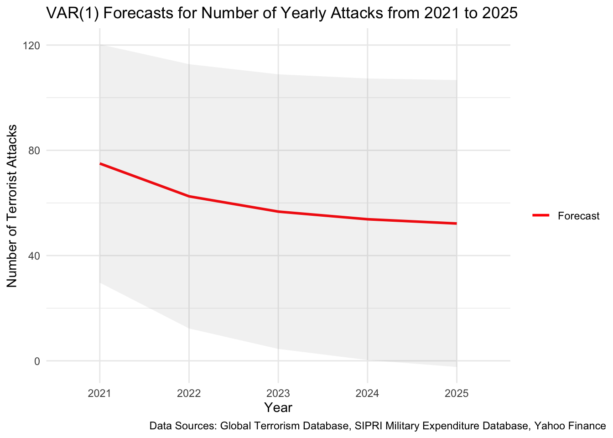
#ggplotly(var_plot)plot.ts(var_ts , main = "", xlab = "")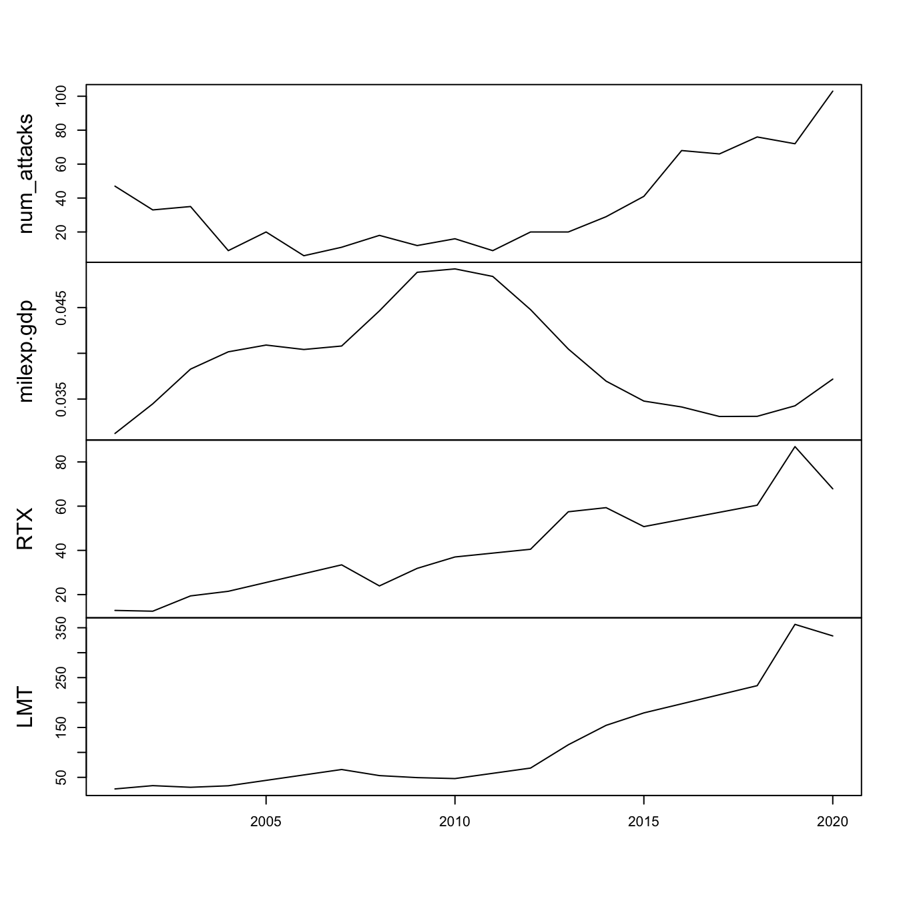
# create scatterplot matrix using plotly
fig <- plot_ly(
data = as.data.frame(var_ts),
type = "splom",
diagonal = list(visible = FALSE),
dimensions = list(
list(label = "# Attacks", values = ~num_attacks),
list(label = "Military Exp", values = ~milexp.gdp),
list(label = "RTX", values = ~RTX),
list(label = "LMT", values = ~LMT)
)
) %>%
layout(hovermode = "x")
fig <- fig %>%
layout(
title = "Scatterplot Matrix of VAR Model Variables (Post-9/11)",
xaxis = list(title = ""),
yaxis = list(title = "")
)
# display plot
figHere we use the VARselect() function to find the best p to fit VAR(p). We will choose a maximum lag of 10 and check which p value returns lowest AIC.
(var_result <- VARselect(var_ts, lag.max = 10, type = "both"))$selection
AIC(n) HQ(n) SC(n) FPE(n)
2 2 2 3
$criteria
1 2 3 4 5 6 7 8 9 10
AIC(n) -2.0240586 -Inf -Inf -Inf -Inf -Inf -Inf -Inf -Inf -Inf
HQ(n) -2.8207028 -Inf -Inf -Inf -Inf -Inf -Inf -Inf -Inf -Inf
SC(n) -1.2978543 -Inf -Inf -Inf -Inf -Inf -Inf -Inf -Inf -Inf
FPE(n) 0.2783486 NaN 0 0 0 0 0 0 0 0Now, we will fit VAR(1), VAR(2), and VAR(3):
VAR(1) output:
summary(fit <- VAR(var_ts, p=1, type="both"))
VAR Estimation Results:
=========================
Endogenous variables: num_attacks, milexp.gdp, RTX, LMT
Deterministic variables: both
Sample size: 19
Log Likelihood: -88.384
Roots of the characteristic polynomial:
0.9729 0.9729 0.294 0.294
Call:
VAR(y = var_ts, p = 1, type = "both")
Estimation results for equation num_attacks:
============================================
num_attacks = num_attacks.l1 + milexp.gdp.l1 + RTX.l1 + LMT.l1 + const + trend
Estimate Std. Error t value Pr(>|t|)
num_attacks.l1 1.595e-02 2.081e-01 0.077 0.94006
milexp.gdp.l1 -1.081e+03 6.258e+02 -1.728 0.10764
RTX.l1 -7.065e-01 4.474e-01 -1.579 0.13830
LMT.l1 3.208e-01 9.775e-02 3.282 0.00595 **
const 5.678e+01 2.649e+01 2.144 0.05155 .
trend 1.292e+00 1.110e+00 1.164 0.26544
---
Signif. codes: 0 '***' 0.001 '**' 0.01 '*' 0.05 '.' 0.1 ' ' 1
Residual standard error: 7.386 on 13 degrees of freedom
Multiple R-Squared: 0.9508, Adjusted R-squared: 0.9319
F-statistic: 50.28 on 5 and 13 DF, p-value: 4.759e-08
Estimation results for equation milexp.gdp:
===========================================
milexp.gdp = num_attacks.l1 + milexp.gdp.l1 + RTX.l1 + LMT.l1 + const + trend
Estimate Std. Error t value Pr(>|t|)
num_attacks.l1 -1.634e-05 4.514e-05 -0.362 0.72313
milexp.gdp.l1 1.173e+00 1.357e-01 8.642 9.51e-07 ***
RTX.l1 -2.367e-04 9.703e-05 -2.439 0.02982 *
LMT.l1 7.978e-05 2.120e-05 3.763 0.00237 **
const 8.972e-05 5.745e-03 0.016 0.98778
trend -4.702e-04 2.407e-04 -1.953 0.07269 .
---
Signif. codes: 0 '***' 0.001 '**' 0.01 '*' 0.05 '.' 0.1 ' ' 1
Residual standard error: 0.001602 on 13 degrees of freedom
Multiple R-Squared: 0.9358, Adjusted R-squared: 0.9111
F-statistic: 37.88 on 5 and 13 DF, p-value: 2.648e-07
Estimation results for equation RTX:
====================================
RTX = num_attacks.l1 + milexp.gdp.l1 + RTX.l1 + LMT.l1 + const + trend
Estimate Std. Error t value Pr(>|t|)
num_attacks.l1 0.15927 0.20253 0.786 0.44574
milexp.gdp.l1 -237.75906 609.01223 -0.390 0.70256
RTX.l1 0.25639 0.43534 0.589 0.56599
LMT.l1 -0.09915 0.09512 -1.042 0.31625
const 9.74924 25.77580 0.378 0.71136
trend 3.40135 1.08011 3.149 0.00769 **
---
Signif. codes: 0 '***' 0.001 '**' 0.01 '*' 0.05 '.' 0.1 ' ' 1
Residual standard error: 7.187 on 13 degrees of freedom
Multiple R-Squared: 0.901, Adjusted R-squared: 0.8629
F-statistic: 23.66 on 5 and 13 DF, p-value: 4.196e-06
Estimation results for equation LMT:
====================================
LMT = num_attacks.l1 + milexp.gdp.l1 + RTX.l1 + LMT.l1 + const + trend
Estimate Std. Error t value Pr(>|t|)
num_attacks.l1 0.6765 0.7228 0.936 0.3664
milexp.gdp.l1 -2954.0655 2173.5506 -1.359 0.1972
RTX.l1 0.6736 1.5537 0.434 0.6717
LMT.l1 0.2730 0.3395 0.804 0.4358
const 71.2471 91.9932 0.774 0.4525
trend 8.2020 3.8549 2.128 0.0531 .
---
Signif. codes: 0 '***' 0.001 '**' 0.01 '*' 0.05 '.' 0.1 ' ' 1
Residual standard error: 25.65 on 13 degrees of freedom
Multiple R-Squared: 0.9554, Adjusted R-squared: 0.9382
F-statistic: 55.66 on 5 and 13 DF, p-value: 2.549e-08
Covariance matrix of residuals:
num_attacks milexp.gdp RTX LMT
num_attacks 54.55371 -2.410e-03 -14.602526 -62.659252
milexp.gdp -0.00241 2.566e-06 -0.002115 -0.001013
RTX -14.60253 -2.115e-03 51.659389 167.723385
LMT -62.65925 -1.013e-03 167.723385 658.016441
Correlation matrix of residuals:
num_attacks milexp.gdp RTX LMT
num_attacks 1.0000 -0.20366 -0.2751 -0.33072
milexp.gdp -0.2037 1.00000 -0.1837 -0.02465
RTX -0.2751 -0.18367 1.0000 0.90971
LMT -0.3307 -0.02465 0.9097 1.00000VAR(2) output:
summary(fit <- VAR(var_ts, p=2, type="both"))
VAR Estimation Results:
=========================
Endogenous variables: num_attacks, milexp.gdp, RTX, LMT
Deterministic variables: both
Sample size: 18
Log Likelihood: -53.372
Roots of the characteristic polynomial:
1.02 1.006 1.006 0.9265 0.7296 0.7296 0.7047 0.7047
Call:
VAR(y = var_ts, p = 2, type = "both")
Estimation results for equation num_attacks:
============================================
num_attacks = num_attacks.l1 + milexp.gdp.l1 + RTX.l1 + LMT.l1 + num_attacks.l2 + milexp.gdp.l2 + RTX.l2 + LMT.l2 + const + trend
Estimate Std. Error t value Pr(>|t|)
num_attacks.l1 -2.451e-01 2.616e-01 -0.937 0.3762
milexp.gdp.l1 -5.577e+02 1.109e+03 -0.503 0.6287
RTX.l1 -1.690e+00 6.322e-01 -2.673 0.0282 *
LMT.l1 5.662e-01 1.757e-01 3.223 0.0122 *
num_attacks.l2 3.234e-01 1.772e-01 1.825 0.1055
milexp.gdp.l2 -1.465e+03 1.851e+03 -0.791 0.4516
RTX.l2 5.994e-02 5.480e-01 0.109 0.9156
LMT.l2 -5.252e-01 2.400e-01 -2.188 0.0601 .
const 8.362e+01 4.723e+01 1.770 0.1146
trend 7.212e+00 3.296e+00 2.188 0.0601 .
---
Signif. codes: 0 '***' 0.001 '**' 0.01 '*' 0.05 '.' 0.1 ' ' 1
Residual standard error: 5.75 on 8 degrees of freedom
Multiple R-Squared: 0.9817, Adjusted R-squared: 0.961
F-statistic: 47.57 on 9 and 8 DF, p-value: 5.404e-06
Estimation results for equation milexp.gdp:
===========================================
milexp.gdp = num_attacks.l1 + milexp.gdp.l1 + RTX.l1 + LMT.l1 + num_attacks.l2 + milexp.gdp.l2 + RTX.l2 + LMT.l2 + const + trend
Estimate Std. Error t value Pr(>|t|)
num_attacks.l1 -5.792e-05 6.941e-05 -0.835 0.428209
milexp.gdp.l1 1.632e+00 2.943e-01 5.546 0.000544 ***
RTX.l1 1.623e-05 1.677e-04 0.097 0.925291
LMT.l1 7.586e-06 4.661e-05 0.163 0.874752
num_attacks.l2 -3.381e-05 4.702e-05 -0.719 0.492632
milexp.gdp.l2 -8.161e-01 4.912e-01 -1.662 0.135177
RTX.l2 2.335e-05 1.454e-04 0.161 0.876379
LMT.l2 3.700e-05 6.368e-05 0.581 0.577191
const 9.377e-03 1.253e-02 0.748 0.475719
trend -4.351e-04 8.745e-04 -0.498 0.632216
---
Signif. codes: 0 '***' 0.001 '**' 0.01 '*' 0.05 '.' 0.1 ' ' 1
Residual standard error: 0.001526 on 8 degrees of freedom
Multiple R-Squared: 0.962, Adjusted R-squared: 0.9193
F-statistic: 22.51 on 9 and 8 DF, p-value: 9.392e-05
Estimation results for equation RTX:
====================================
RTX = num_attacks.l1 + milexp.gdp.l1 + RTX.l1 + LMT.l1 + num_attacks.l2 + milexp.gdp.l2 + RTX.l2 + LMT.l2 + const + trend
Estimate Std. Error t value Pr(>|t|)
num_attacks.l1 8.974e-02 3.673e-01 0.244 0.813
milexp.gdp.l1 -1.526e+03 1.558e+03 -0.979 0.356
RTX.l1 -5.968e-02 8.877e-01 -0.067 0.948
LMT.l1 -3.363e-02 2.467e-01 -0.136 0.895
num_attacks.l2 1.332e-01 2.488e-01 0.535 0.607
milexp.gdp.l2 1.441e+03 2.599e+03 0.554 0.595
RTX.l2 -4.760e-01 7.694e-01 -0.619 0.553
LMT.l2 -2.567e-03 3.370e-01 -0.008 0.994
const 1.431e+01 6.632e+01 0.216 0.835
trend 4.414e+00 4.628e+00 0.954 0.368
Residual standard error: 8.074 on 8 degrees of freedom
Multiple R-Squared: 0.9106, Adjusted R-squared: 0.81
F-statistic: 9.053 on 9 and 8 DF, p-value: 0.002481
Estimation results for equation LMT:
====================================
LMT = num_attacks.l1 + milexp.gdp.l1 + RTX.l1 + LMT.l1 + num_attacks.l2 + milexp.gdp.l2 + RTX.l2 + LMT.l2 + const + trend
Estimate Std. Error t value Pr(>|t|)
num_attacks.l1 6.302e-01 1.391e+00 0.453 0.662
milexp.gdp.l1 -5.311e+03 5.897e+03 -0.901 0.394
RTX.l1 1.946e+00 3.361e+00 0.579 0.578
LMT.l1 -1.831e-01 9.339e-01 -0.196 0.849
num_attacks.l2 6.553e-01 9.422e-01 0.696 0.506
milexp.gdp.l2 5.310e+03 9.841e+03 0.540 0.604
RTX.l2 5.094e-02 2.913e+00 0.017 0.986
LMT.l2 8.553e-01 1.276e+00 0.670 0.522
const -3.930e+01 2.511e+02 -0.157 0.880
trend -1.058e+00 1.752e+01 -0.060 0.953
Residual standard error: 30.57 on 8 degrees of freedom
Multiple R-Squared: 0.9592, Adjusted R-squared: 0.9134
F-statistic: 20.91 on 9 and 8 DF, p-value: 0.0001238
Covariance matrix of residuals:
num_attacks milexp.gdp RTX LMT
num_attacks 3.306e+01 -3.772e-04 -29.554209 -90.060020
milexp.gdp -3.772e-04 2.327e-06 0.000433 0.002229
RTX -2.955e+01 4.330e-04 65.182414 239.325047
LMT -9.006e+01 2.229e-03 239.325047 934.380096
Correlation matrix of residuals:
num_attacks milexp.gdp RTX LMT
num_attacks 1.0000 -0.04300 -0.63666 -0.51242
milexp.gdp -0.0430 1.00000 0.03515 0.04781
RTX -0.6367 0.03515 1.00000 0.96975
LMT -0.5124 0.04781 0.96975 1.00000VAR(3) output: System is computationally singular!
# Define the number of folds for cross-validation
k <- 5
# Define the p values to test
p_values <- c(1, 2)
# Split the data into k folds
cv_folds <- cut(seq(1, nrow(var_ts)), breaks = k, labels = FALSE)
# Initialize vectors to store RMSE and AIC values for each p value
rmse_vec <- numeric(length(p_values))
aic_vec <- numeric(length(p_values))
# Loop over p values and perform cross-validation
for (i in seq_along(p_values)) {
p <- p_values[i]
rmse_cv <- numeric(k)
aic_cv <- numeric(k)
for (j in 1:k) {
# Split the data into training and testing sets
train <- var_ts[cv_folds != j, ]
test <- var_ts[cv_folds == j, ]
# Fit the VAR model with the current p value
var_fit <- VAR(train, p = p)
# Make predictions for the testing set
pred <- predict(var_fit, n.ahead = nrow(test))$fcst
# Calculate RMSE and AIC for the current fold
rmse_cv[j] <- sqrt(mean((pred$num_attacks - test[,1])^2))
aic_cv[j] <- AIC(var_fit)
}
# Calculate the mean RMSE and AIC across all folds for the current p value
rmse_vec[i] <- mean(rmse_cv)
aic_vec[i] <- mean(aic_cv)
}
# Create a table of RMSE and AIC values for each p value
results_table <- tibble(p_values, rmse_vec, aic_vec)
# Print the results table
kable(results_table, format = "markdown",
col.names = c("P Values", "Mean RMSE (5 Folds)", "Mean AIC (5 Folds)"), align = "c", digits = 2
)| P Values | Mean RMSE (5 Folds) | Mean AIC (5 Folds) |
|---|---|---|
| 1 | 71.52 | 185.30 |
| 2 | 99.81 | 146.72 |
The VAR(1) model outputs the lowest Mean RMSE of 71.5162107 attacks from the 5-fold cross validation. However, it has the highest AIC score. Because predictive performance is best and it is the simplest model, we shall choose the VAR(1) model as the best option.
final_var <- VAR(var_ts, p = 1)
(fit.pr = predict(final_var, n.ahead = 5, ci = 0.95)) # 5 years ahead $num_attacks
fcst lower upper CI
[1,] 106.4884 91.82993 121.1468 14.65844
[2,] 105.5359 86.41872 124.6530 19.11715
[3,] 109.0562 81.39160 136.7209 27.66465
[4,] 118.1089 80.57594 155.6418 37.53294
[5,] 131.7816 85.56976 177.9934 46.21181
$milexp.gdp
fcst lower upper CI
[1,] 0.04196277 0.03852185 0.04540369 0.003440920
[2,] 0.04459493 0.03773271 0.05145715 0.006862220
[3,] 0.04512609 0.03559814 0.05465405 0.009527953
[4,] 0.04433390 0.03338255 0.05528525 0.010951351
[5,] 0.04302182 0.03156563 0.05447801 0.011456190
$RTX
fcst lower upper CI
[1,] 78.4456 60.42230 96.4689 18.02330
[2,] 92.8866 69.53195 116.2413 23.35465
[3,] 106.4325 80.56025 132.3048 25.87226
[4,] 118.4094 90.38182 146.4371 28.02763
[5,] 129.3340 98.88812 159.7798 30.44585
$LMT
fcst lower upper CI
[1,] 353.1119 296.8575 409.3663 56.25441
[2,] 388.1265 301.4405 474.8124 86.68600
[3,] 432.9755 319.8177 546.1334 113.15783
[4,] 485.3377 348.8489 621.8265 136.48881
[5,] 543.6910 385.6157 701.7663 158.07532fanchart(fit.pr) # plot prediction + error
The above plot showcases the forecasts for each variable present in the VAR(1) model, Number of Yearly Attacks, US Military Expenditure as a % of US GDP, and Closing Price of Raytheon Technologies Stock. The predicted forecast, from the years 2021 to 2025, for Number of Yearly Attacks is a good sign for the US due to the decreasing and plateauing trend, although the latest observations from 2015 onwards suggest an increasing trend. The same forecasted trend is discerned for US Military Expenditure as a % of US GDP, with Raytheon Technologies Stock being the only variable with a predicted increasing trend.
Let us visualize more closely the forecasts for the Number of Yearly Attacks from 2021 to 2025, corresponding to the VAR(1) model fitted on 9/11 and post-9/11 years (2001-2020):
# create df of attack forecasts
df_fvar_attack <- as.data.frame(fit.pr$fcst$num_attacks)
# add year column
df_fvar_attack$Year <- c("2021", "2022", "2023", "2024", "2025")
(var_plot <- ggplot(data=df_fvar_attack, aes(x=Year, y=fcst, group = 1)) +
geom_line(aes(color="Forecast"), linewidth=1) +
geom_ribbon(aes(ymin=lower, ymax=upper, fill="Confidence Interval"), alpha=0.1) +
labs(title="VAR(1) Forecasts for Number of Yearly Attacks from 2021 to 2025",
y="Number of Terrorist Attacks",
color="", fill="",
caption="Data Sources: Global Terrorism Database, SIPRI Military Expenditure Database, Yahoo Finance") +
scale_color_manual(values = c("Forecast"="red")) +
scale_fill_manual(values = c("95% Confidence Interval"="steelblue")) +
theme_minimal() +
theme(plot.caption.position = "plot"))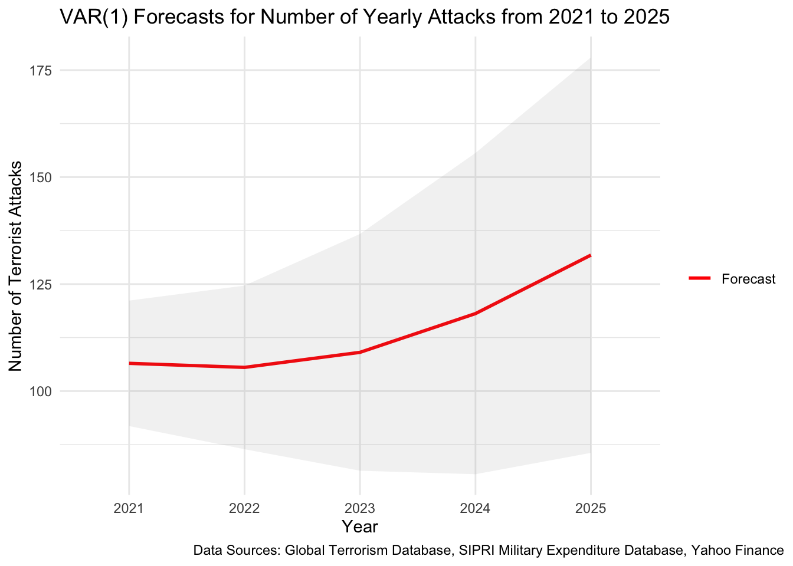
#ggplotly(var_plot)The ARIMAX model being analyzed in this section is:
Its output is as follows:
gtd_USA_2 <- gtd %>%
filter(country_txt=="United States")
# drop 33 observations from a total of 3121 observations (if taking for '70)
gtd_USA_2 <- gtd_USA_2[complete.cases(gtd_USA_2$Date),]
# impute missing values for nkill (Total Number of Fatalities: victims and attackers) as 0
gtd_USA_2$nkill[is.na(gtd_USA_2$nkill)] <- 0
# select desired columns for analysis (num_casualties ~ num_attacks, state, attack_type, weapon_type, victim_type, )
gtd_USA_2 <- subset(gtd_USA_2, select=c(Date, nkill))
# new dataframe for monthly number of attacks 1970-2020
gtd_yearly_attacks_deaths <- gtd_USA_2 %>%
group_by(year(Date)) %>%
summarise(nkill=sum(nkill),
num_attacks = n())
colnames(gtd_yearly_attacks_deaths)[1] ="Year"
colnames(gtd_yearly_attacks_deaths)[2] ="num_fatal"
colnames(gtd_yearly_attacks_deaths)[3] ="num_attacks"
gtd_yearly_attacks_deaths$Year <- as.Date(paste0(gtd_yearly_attacks_deaths$Year, "-12-31"))
# Fill missing dates (0 attacks for those dates)
gtd_yearly_attacks_deaths <- gtd_yearly_attacks_deaths %>%
complete(Year = seq.Date(min(Year), max(Year), by="year"))
# impute 28 ATTACKS in 1993 and 21 casualties in 1993 as per GTD
gtd_yearly_attacks_deaths[24,2] <- 28
gtd_yearly_attacks_deaths[24,3] <- 21
# CLEAN DHS df
## convert year to date time
dhs$Year <- as.Date(paste(dhs$Year, "-12-31", sep = ""), format = "%Y-%m-%d")
## subset
dhs <- subset(dhs, select = c(Year, Temporaryvisitorsforpleasure, Temporaryvisitorsforbusiness, Students))
# join with aggregated GTD df
gtd_dhs <- merge(gtd_yearly_attacks_deaths, dhs, by = "Year", all.x = TRUE)
# interpolate NAs in DHS columns (1970 to 1980, 1982 to 84, 86 to 88)
gtd_dhs[,4] <- imputeTS::na.interpolation(gtd_dhs[,4])
gtd_dhs[,5] <- imputeTS::na.interpolation(gtd_dhs[,5])
gtd_dhs[,6] <- imputeTS::na.interpolation(gtd_dhs[,6])
# join sipri dataset -> military expenditure as % of GDP
milexp.gdp <- sipri_gdp %>% filter(Country=='United States of America')
milexp.gdp <- melt(milexp.gdp, id.vars = 'Country', variable.name = 'Year', value.name = 'GDP')
milexp.gdp <- as.numeric(milexp.gdp[22:72, 3])
gtd_dhs_sipri <- cbind(gtd_dhs, milexp.gdp)
#gtd_dhs_sipri[32,2] <- 10 # subtracting 3004 number of casualties (9/11 attacks -> outlier event)
#gtd_dhs_sipri[32,3] <- 43 # subtracting 4 attacks (9/11 attacks -> outlier event)
# Collecting Raytheon Tech Stock Price (only one active since 70's)
options("getSymbols.warning4.0"=FALSE)
options("getSymbols.yahoo.warning"=FALSE)
tickers = c("RTX")
for (i in tickers){
getSymbols(i,
from = "1970-01-01",
to = "2021-12-31")}
rtx <- data.frame(RTX$RTX.Adjusted)
rtx <- data.frame(rtx,rownames(rtx))
colnames(rtx) <- append(tickers,'Dates')
rtx$date<-as.Date(rtx$Dates,"%Y-%m-%d")
rtx_yearly <- rtx %>%
filter(format(date, "%m-%d") == "12-31") %>%
group_by(Year=year(date)) %>%
summarise(RTX = last(RTX))
rtx_yearly$Year <- as.Date(paste0(rtx_yearly$Year, "-12-31"))
# Fill missing dates
rtx_yearly <- rtx_yearly %>%
complete(Year = seq.Date(min(Year), max(Year), by="year"))
rtx_yearly$RTX <- imputeTS::na.interpolation(rtx_yearly$RTX)
# final join to create final VAR dataset
gtd_dhs_sipri_rtx <- cbind(gtd_dhs_sipri, rtx_yearly$RTX)
# rename cols
colnames(gtd_dhs_sipri_rtx)[c(4, 5, 8)] <- c("Pleasure", "Business", "RTX")
# convert df to matrix
ts_matrix <- as.matrix(gtd_dhs_sipri_rtx[, 2:8])
# convert the matrix to a time series object with a yearly frequency
var_ts <- ts(ts_matrix, frequency = 1,
start = 1970)fit.reg <- lm(num_attacks ~ . - num_fatal, data =var_ts)
summary(fit.reg)
Call:
lm(formula = num_attacks ~ . - num_fatal, data = var_ts)
Residuals:
Min 1Q Median 3Q Max
-58.34 -38.63 -18.22 28.38 310.69
Coefficients:
Estimate Std. Error t value Pr(>|t|)
(Intercept) -4.073e+01 8.203e+01 -0.497 0.6219
Pleasure 4.791e-06 2.642e-06 1.813 0.0764 .
Business -1.831e-05 1.605e-05 -1.141 0.2599
Students -8.834e-05 6.736e-05 -1.311 0.1964
milexp.gdp 2.371e+03 1.216e+03 1.950 0.0574 .
RTX 5.734e-01 1.076e+00 0.533 0.5968
---
Signif. codes: 0 '***' 0.001 '**' 0.01 '*' 0.05 '.' 0.1 ' ' 1
Residual standard error: 62.47 on 45 degrees of freedom
Multiple R-squared: 0.299, Adjusted R-squared: 0.2211
F-statistic: 3.839 on 5 and 45 DF, p-value: 0.005556res.fit<-ts(residuals(fit.reg),star=decimal_date(as.Date("1970-01-01",format = "%Y-%m-%d")),frequency = 1)
############## Then look at the residuals ############
res.fit %>% ggtsdisplay() # no need to difference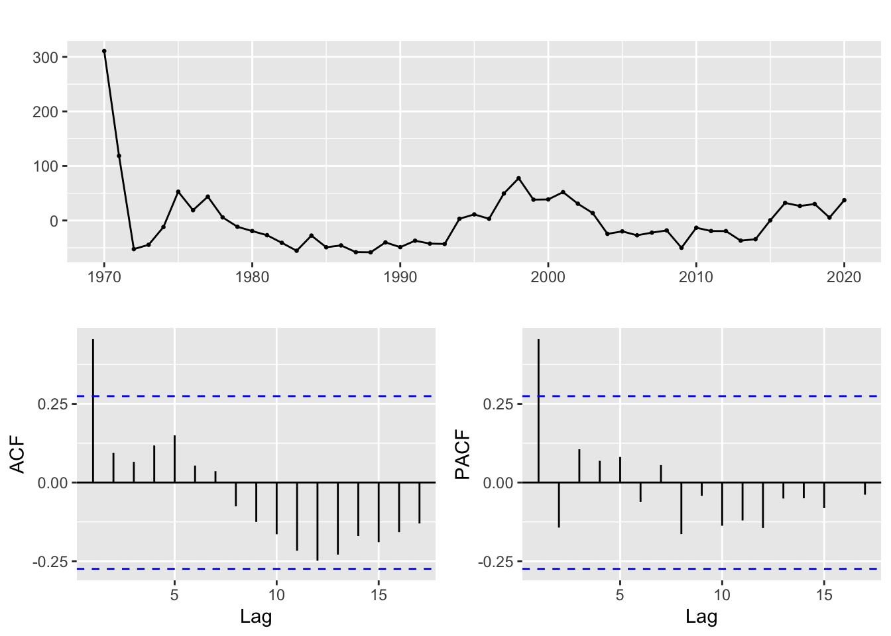
#q=1,3 Q=1 , p=1,2, P=1,2
#write a funtion
SARIMA.c=function(p1,p2,q1,q2,P1,P2,Q1,Q2,d1,d2,data){
temp=c()
d=0
D=0
s=12
i=1
temp= data.frame()
ls=matrix(rep(NA,9*44),nrow=44)
for (p in p1:p2)
{
for(q in q1:q2)
{
for(P in P1:P2)
{
for(Q in Q1:Q2)
{
for(d in d1:d2)
{
if(p+d+q+P+D+Q<=8)
{
model<- Arima(data,order=c(p-1,d,q-1),seasonal=c(P-1,D,Q-1))
ls[i,]= c(p-1,d,q-1,P-1,D,Q-1,model$aic,model$bic,model$aicc)
i=i+1
#print(i)
}
}
}
}
}
}
temp= as.data.frame(ls)
names(temp)= c("p","d","q","P","D","Q","AIC","BIC","AICc")
temp
}
##q=1,3 Q=0 p=1,2 P=0 d=0
output=SARIMA.c(p1=1,p2=3,q1=1,q2=4,P1=1,P2=3,Q1=1,Q2=2,d1=0,d2=0,data=res.fit)
output p d q P D Q AIC BIC AICc
1 0 0 0 0 0 0 564.0890 567.9527 564.3390
2 0 0 0 0 0 1 564.0890 567.9527 564.3390
3 0 0 0 1 0 0 564.0890 567.9527 564.3390
4 0 0 0 1 0 1 564.0890 567.9527 564.3390
5 0 0 0 2 0 0 564.0890 567.9527 564.3390
6 0 0 0 2 0 1 564.0890 567.9527 564.3390
7 0 0 1 0 0 0 536.4054 542.2008 536.9160
8 0 0 1 0 0 1 536.4054 542.2008 536.9160
9 0 0 1 1 0 0 536.4054 542.2008 536.9160
10 0 0 1 1 0 1 536.4054 542.2008 536.9160
11 0 0 1 2 0 0 536.4054 542.2008 536.9160
12 0 0 1 2 0 1 536.4054 542.2008 536.9160
13 0 0 2 0 0 0 529.5765 537.3038 530.4461
14 0 0 2 0 0 1 529.5765 537.3038 530.4461
15 0 0 2 1 0 0 529.5765 537.3038 530.4461
16 0 0 2 1 0 1 529.5765 537.3038 530.4461
17 0 0 2 2 0 0 529.5765 537.3038 530.4461
18 0 0 3 0 0 0 525.4438 535.1029 526.7771
19 0 0 3 0 0 1 525.4438 535.1029 526.7771
20 0 0 3 1 0 0 525.4438 535.1029 526.7771
21 1 0 0 0 0 0 535.4053 541.2008 535.9160
22 1 0 0 0 0 1 535.4053 541.2008 535.9160
23 1 0 0 1 0 0 535.4053 541.2008 535.9160
24 1 0 0 1 0 1 535.4053 541.2008 535.9160
25 1 0 0 2 0 0 535.4053 541.2008 535.9160
26 1 0 0 2 0 1 535.4053 541.2008 535.9160
27 1 0 1 0 0 0 528.7138 536.4411 529.5834
28 1 0 1 0 0 1 528.7138 536.4411 529.5834
29 1 0 1 1 0 0 528.7138 536.4411 529.5834
30 1 0 1 1 0 1 528.7138 536.4411 529.5834
31 1 0 1 2 0 0 528.7138 536.4411 529.5834
32 1 0 2 0 0 0 525.8292 535.4883 527.1625
33 1 0 2 0 0 1 525.8292 535.4883 527.1625
34 1 0 2 1 0 0 525.8292 535.4883 527.1625
35 1 0 3 0 0 0 527.4145 539.0055 529.3236
36 2 0 0 0 0 0 525.9075 533.6348 526.7771
37 2 0 0 0 0 1 525.9075 533.6348 526.7771
38 2 0 0 1 0 0 525.9075 533.6348 526.7771
39 2 0 0 1 0 1 525.9075 533.6348 526.7771
40 2 0 0 2 0 0 525.9075 533.6348 526.7771
41 2 0 1 0 0 0 527.8172 537.4764 529.1506
42 2 0 1 0 0 1 527.8172 537.4764 529.1506
43 2 0 1 1 0 0 527.8172 537.4764 529.1506
44 2 0 2 0 0 0 527.3804 538.9713 529.2895output[which.min(output$AIC),] p d q P D Q AIC BIC AICc
18 0 0 3 0 0 0 525.4438 535.1029 526.7771output[which.min(output$BIC),] p d q P D Q AIC BIC AICc
36 2 0 0 0 0 0 525.9075 533.6348 526.7771output[which.min(output$AICc),] p d q P D Q AIC BIC AICc
36 2 0 0 0 0 0 525.9075 533.6348 526.7771set.seed(1234)
model_outputar2 <- capture.output(sarima(res.fit, 2,0,0, 0,0,0))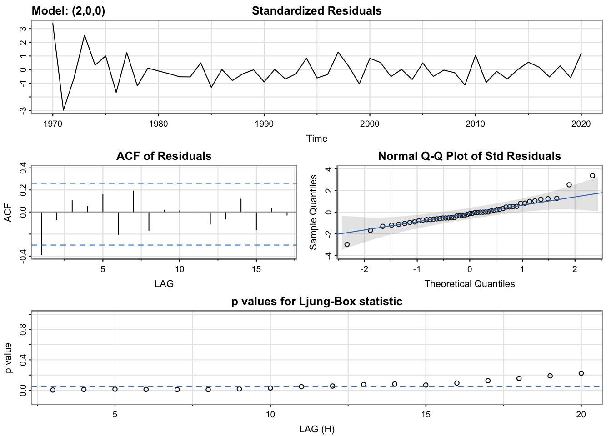
cat(model_outputar2[30:62], model_outputar2[length(model_outputar2)], sep = "\n")converged
$fit
Call:
arima(x = xdata, order = c(p, d, q), seasonal = list(order = c(P, D, Q), period = S),
xreg = xmean, include.mean = FALSE, transform.pars = trans, fixed = fixed,
optim.control = list(trace = trc, REPORT = 1, reltol = tol))
Coefficients:
ar1 ar2 xmean
1.3542 -0.6186 13.0780
s.e. 0.1634 0.1684 22.8472
sigma^2 estimated as 1443: log likelihood = -258.95, aic = 525.91
$degrees_of_freedom
[1] 48
$ttable
Estimate SE t.value p.value
ar1 1.3542 0.1634 8.2894 0.0000
ar2 -0.6186 0.1684 -3.6727 0.0006
xmean 13.0780 22.8472 0.5724 0.5697
$AIC
[1] 10.31191
$AICc
[1] 10.32192
$BIC
[1] 10.46343arimaModel_1 <- arima(res.fit, order = c(2,0,0))
forecast1=predict(arimaModel_1, 5)
# create df with fcast preds and +-1.96 SE for 95% CI Bands
farimax_df <- data.frame(
Year = 2021:2025,
fcst = as.numeric(forecast1$pred),
lower = as.numeric(forecast1$pred - 1.96 * forecast1$se),
upper = as.numeric(forecast1$pred + 1.96 * forecast1$se)
)
#plot(forecast1$pred, main = "ARIMA(2,0,0) Forecast For 5 Years", xlab = "Time", ylab = "Values", col = "red")
(arimax_plot <- ggplot(data=farimax_df, aes(x=Year, y=fcst, group = 1)) +
geom_line(aes(color="Forecast"), linewidth=1) +
geom_ribbon(aes(ymin=lower, ymax=upper, fill="Confidence Interval"), alpha=0.1) +
labs(title="ARIMA(2,0,0) Forecasts for Number of Yearly Attacks from 2021 to 2025",
y="Number of Terrorist Attacks",
color="", fill="",
caption="Data Sources: Global Terrorism Database, Department of Homeland Security, SIPRI Military Expenditure Database, Yahoo Finance") +
scale_color_manual(values = c("Forecast"="red")) +
scale_fill_manual(values = c("95% Confidence Interval"="steelblue")) +
theme_minimal() +
theme(plot.caption.position = "plot", plot.caption = element_text(size=8)))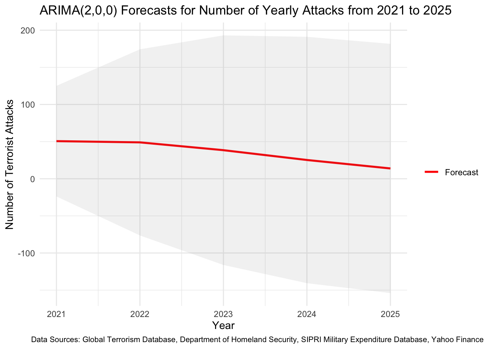
The ARIMAX model being analyzed in this section is:
Its output is as follows:
gtd_USA_2 <- gtd %>%
filter(country_txt=="United States")
# drop 33 observations from a total of 3121 observations (if taking for '70)
gtd_USA_2 <- gtd_USA_2[complete.cases(gtd_USA_2$Date),]
# impute missing values for nkill (Total Number of Fatalities: victims and attackers) as 0
gtd_USA_2$nkill[is.na(gtd_USA_2$nkill)] <- 0
# select desired columns for analysis (num_casualties ~ num_attacks, state, attack_type, weapon_type, victim_type, )
gtd_USA_2 <- subset(gtd_USA_2, select=c(Date, nkill))
# new dataframe for monthly number of attacks 1970-2020
gtd_yearly_attacks_deaths <- gtd_USA_2 %>%
group_by(year(Date)) %>%
summarise(nkill=sum(nkill),
num_attacks = n())
colnames(gtd_yearly_attacks_deaths)[1] ="Year"
colnames(gtd_yearly_attacks_deaths)[2] ="num_fatal"
colnames(gtd_yearly_attacks_deaths)[3] ="num_attacks"
gtd_yearly_attacks_deaths$Year <- as.Date(paste0(gtd_yearly_attacks_deaths$Year, "-12-31"))
# Fill missing dates (0 attacks for those dates)
gtd_yearly_attacks_deaths <- gtd_yearly_attacks_deaths %>%
complete(Year = seq.Date(min(Year), max(Year), by="year"))
# impute 28 ATTACKS in 1993 and 21 casualties in 1993 as per GTD
gtd_yearly_attacks_deaths[24,2] <- 28
gtd_yearly_attacks_deaths[24,3] <- 21
# CLEAN DHS df
## convert year to date time
dhs$Year <- as.Date(paste(dhs$Year, "-12-31", sep = ""), format = "%Y-%m-%d")
## subset
dhs <- subset(dhs, select = c(Year, Temporaryvisitorsforpleasure, Temporaryvisitorsforbusiness, Students))
# join with aggregated GTD df
gtd_dhs <- merge(gtd_yearly_attacks_deaths, dhs, by = "Year", all.x = TRUE)
# interpolate NAs in DHS columns (1970 to 1980, 1982 to 84, 86 to 88)
gtd_dhs[,4] <- imputeTS::na.interpolation(gtd_dhs[,4])
gtd_dhs[,5] <- imputeTS::na.interpolation(gtd_dhs[,5])
gtd_dhs[,6] <- imputeTS::na.interpolation(gtd_dhs[,6])
# join sipri dataset -> military expenditure as % of GDP
milexp.gdp <- sipri_gdp %>% filter(Country=='United States of America')
milexp.gdp <- melt(milexp.gdp, id.vars = 'Country', variable.name = 'Year', value.name = 'GDP')
milexp.gdp <- as.numeric(milexp.gdp[22:72, 3])
gtd_dhs_sipri <- cbind(gtd_dhs, milexp.gdp)
#gtd_dhs_sipri[32,2] <- 10 # subtracting 3004 number of casualties (9/11 attacks -> outlier event)
#gtd_dhs_sipri[32,3] <- 43 # subtracting 4 attacks (9/11 attacks -> outlier event)
# Collecting Raytheon Tech Stock Price (only one active since 70's)
options("getSymbols.warning4.0"=FALSE)
options("getSymbols.yahoo.warning"=FALSE)
tickers = c("RTX")
for (i in tickers){
getSymbols(i,
from = "1970-01-01",
to = "2021-12-31")}
rtx <- data.frame(RTX$RTX.Adjusted)
rtx <- data.frame(rtx,rownames(rtx))
colnames(rtx) <- append(tickers,'Dates')
rtx$date<-as.Date(rtx$Dates,"%Y-%m-%d")
rtx_yearly <- rtx %>%
filter(format(date, "%m-%d") == "12-31") %>%
group_by(Year=year(date)) %>%
summarise(RTX = last(RTX))
rtx_yearly$Year <- as.Date(paste0(rtx_yearly$Year, "-12-31"))
# Fill missing dates
rtx_yearly <- rtx_yearly %>%
complete(Year = seq.Date(min(Year), max(Year), by="year"))
rtx_yearly$RTX <- imputeTS::na.interpolation(rtx_yearly$RTX)
# join
gtd_dhs_sipri_rtx <- cbind(gtd_dhs_sipri, rtx_yearly$RTX)
# LMT
tickers = c("LMT")
for (i in tickers){
getSymbols(i,
from = "2001-09-11",
to = "2021-12-31")}
lmt <- data.frame(LMT$LMT.Adjusted)
lmt <- data.frame(lmt,rownames(lmt))
colnames(lmt) <- append(tickers,'Dates')
lmt$date<-as.Date(lmt$Dates,"%Y-%m-%d")
lmt_yearly <- lmt %>%
filter(format(date, "%m-%d") == "12-31") %>%
group_by(Year=year(date)) %>%
summarise(LMT = last(LMT))
lmt_yearly$Year <- as.Date(paste0(lmt_yearly$Year, "-12-31"))
# Fill missing dates
lmt_yearly <- lmt_yearly %>%
complete(Year = seq.Date(min(Year), max(Year), by="year"))
lmt_yearly$LMT <- imputeTS::na.interpolation(lmt_yearly$LMT)
# filter gtd_hds_sipri_rtx
gtd_dhs_sipri_rtx <- gtd_dhs_sipri_rtx %>% slice(32:n())
# final join to create final arimax dataset
gtd_dhs_sipri_rtx_lmt <- cbind(gtd_dhs_sipri_rtx, lmt_yearly$LMT)
# rename cols
colnames(gtd_dhs_sipri_rtx_lmt)[c(4, 5, 8, 9)] <- c("Pleasure", "Business", "RTX", "LMT")
# convert df to matrix
ts_matrix <- as.matrix(gtd_dhs_sipri_rtx_lmt[, 2:9])
# convert the matrix to a time series object with a yearly frequency
var_ts <- ts(ts_matrix, frequency = 1,
start = 2001)fit.reg <- lm(num_attacks ~ . - num_fatal, data = var_ts)
summary(fit.reg)
Call:
lm(formula = num_attacks ~ . - num_fatal, data = var_ts)
Residuals:
Min 1Q Median 3Q Max
-17.810 -5.474 1.472 4.598 12.926
Coefficients:
Estimate Std. Error t value Pr(>|t|)
(Intercept) 1.076e+02 2.997e+01 3.591 0.00329 **
Pleasure 1.516e-07 1.311e-06 0.116 0.90970
Business -8.943e-06 7.019e-06 -1.274 0.22496
Students 2.584e-05 1.892e-05 1.366 0.19506
milexp.gdp -1.339e+03 6.769e+02 -1.978 0.06955 .
RTX -1.423e+00 5.071e-01 -2.807 0.01482 *
LMT 4.516e-01 7.941e-02 5.687 7.46e-05 ***
---
Signif. codes: 0 '***' 0.001 '**' 0.01 '*' 0.05 '.' 0.1 ' ' 1
Residual standard error: 8.824 on 13 degrees of freedom
Multiple R-squared: 0.9305, Adjusted R-squared: 0.8984
F-statistic: 29 on 6 and 13 DF, p-value: 8.375e-07res.fit<-ts(residuals(fit.reg),star=decimal_date(as.Date("1970-01-01",format = "%Y-%m-%d")),frequency = 1)
############## Then look at the residuals ############
res.fit %>% ggtsdisplay() # no need to difference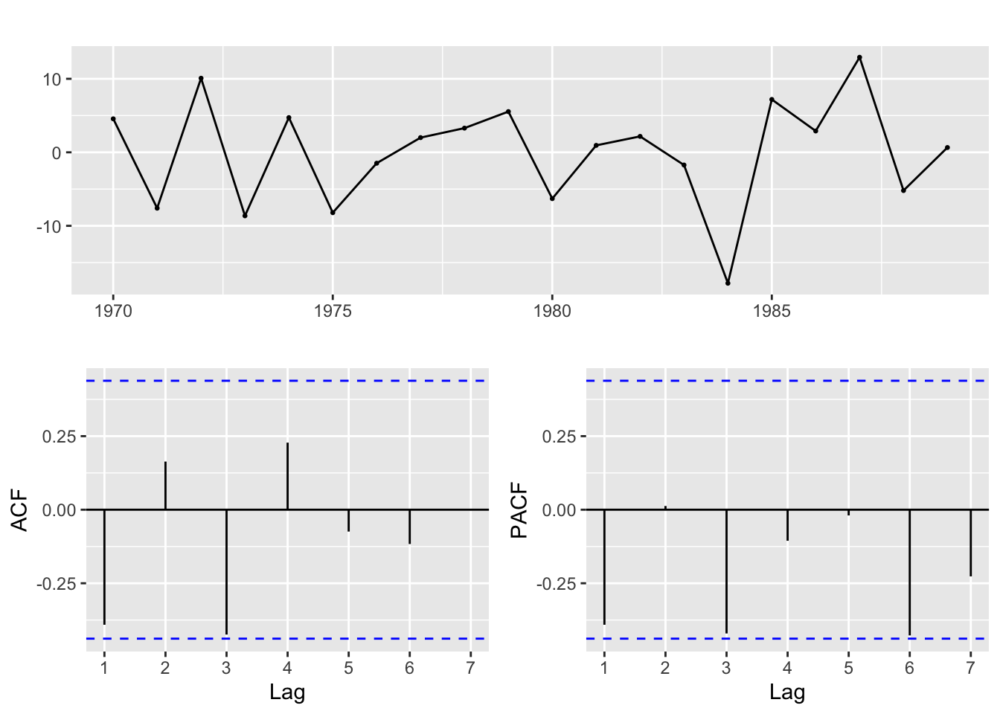
#q=1,3 Q=1 , p=1,2, P=1,2
#write a funtion
SARIMA.c=function(p1,p2,q1,q2,P1,P2,Q1,Q2,d1,d2,data){
temp=c()
d=0
D=0
s=12
i=1
temp= data.frame()
ls=matrix(rep(NA,9*44),nrow=44)
for (p in p1:p2)
{
for(q in q1:q2)
{
for(P in P1:P2)
{
for(Q in Q1:Q2)
{
for(d in d1:d2)
{
if(p+d+q+P+D+Q<=8)
{
model<- Arima(data,order=c(p-1,d,q-1),seasonal=c(P-1,D,Q-1))
ls[i,]= c(p-1,d,q-1,P-1,D,Q-1,model$aic,model$bic,model$aicc)
i=i+1
#print(i)
}
}
}
}
}
}
temp= as.data.frame(ls)
names(temp)= c("p","d","q","P","D","Q","AIC","BIC","AICc")
temp
}
##q=1,2 Q=0 , p=1,2 P=0 d=0
output=SARIMA.c(p1=1,p2=3,q1=1,q2=4,P1=1,P2=3,Q1=1,Q2=2,d1=0,d2=0,data=res.fit)
output p d q P D Q AIC BIC AICc
1 0 0 0 0 0 0 139.2404 141.2318 139.9463
2 0 0 0 0 0 1 139.2404 141.2318 139.9463
3 0 0 0 1 0 0 139.2404 141.2318 139.9463
4 0 0 0 1 0 1 139.2404 141.2318 139.9463
5 0 0 0 2 0 0 139.2404 141.2318 139.9463
6 0 0 0 2 0 1 139.2404 141.2318 139.9463
7 0 0 1 0 0 0 134.8791 137.8663 136.3791
8 0 0 1 0 0 1 134.8791 137.8663 136.3791
9 0 0 1 1 0 0 134.8791 137.8663 136.3791
10 0 0 1 1 0 1 134.8791 137.8663 136.3791
11 0 0 1 2 0 0 134.8791 137.8663 136.3791
12 0 0 1 2 0 1 134.8791 137.8663 136.3791
13 0 0 2 0 0 0 135.9981 139.9810 138.6647
14 0 0 2 0 0 1 135.9981 139.9810 138.6647
15 0 0 2 1 0 0 135.9981 139.9810 138.6647
16 0 0 2 1 0 1 135.9981 139.9810 138.6647
17 0 0 2 2 0 0 135.9981 139.9810 138.6647
18 0 0 3 0 0 0 135.7986 140.7772 140.0843
19 0 0 3 0 0 1 135.7986 140.7772 140.0843
20 0 0 3 1 0 0 135.7986 140.7772 140.0843
21 1 0 0 0 0 0 138.0040 140.9912 139.5040
22 1 0 0 0 0 1 138.0040 140.9912 139.5040
23 1 0 0 1 0 0 138.0040 140.9912 139.5040
24 1 0 0 1 0 1 138.0040 140.9912 139.5040
25 1 0 0 2 0 0 138.0040 140.9912 139.5040
26 1 0 0 2 0 1 138.0040 140.9912 139.5040
27 1 0 1 0 0 0 135.7757 139.7587 138.4424
28 1 0 1 0 0 1 135.7757 139.7587 138.4424
29 1 0 1 1 0 0 135.7757 139.7587 138.4424
30 1 0 1 1 0 1 135.7757 139.7587 138.4424
31 1 0 1 2 0 0 135.7757 139.7587 138.4424
32 1 0 2 0 0 0 137.7740 142.7527 142.0597
33 1 0 2 0 0 1 137.7740 142.7527 142.0597
34 1 0 2 1 0 0 137.7740 142.7527 142.0597
35 1 0 3 0 0 0 135.0720 141.0464 141.5336
36 2 0 0 0 0 0 139.9897 143.9726 142.6564
37 2 0 0 0 0 1 139.9897 143.9726 142.6564
38 2 0 0 1 0 0 139.9897 143.9726 142.6564
39 2 0 0 1 0 1 139.9897 143.9726 142.6564
40 2 0 0 2 0 0 139.9897 143.9726 142.6564
41 2 0 1 0 0 0 141.0728 146.0514 145.3585
42 2 0 1 0 0 1 141.0728 146.0514 145.3585
43 2 0 1 1 0 0 141.0728 146.0514 145.3585
44 2 0 2 0 0 0 138.4103 144.3847 144.8719output[which.min(output$AIC),] p d q P D Q AIC BIC AICc
7 0 0 1 0 0 0 134.8791 137.8663 136.3791output[which.min(output$BIC),] p d q P D Q AIC BIC AICc
7 0 0 1 0 0 0 134.8791 137.8663 136.3791output[which.min(output$AICc),] p d q P D Q AIC BIC AICc
7 0 0 1 0 0 0 134.8791 137.8663 136.3791set.seed(1234)
model_outputma2 <- capture.output(sarima(res.fit, 0,0,1,0,0,0))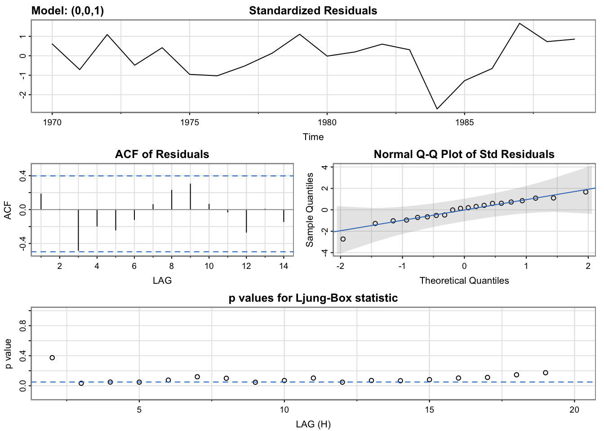
cat(model_outputma2[115:143], model_outputma2[length(model_outputar2)], sep = "\n")converged
$fit
Call:
arima(x = xdata, order = c(p, d, q), seasonal = list(order = c(P, D, Q), period = S),
xreg = xmean, include.mean = FALSE, transform.pars = trans, fixed = fixed,
optim.control = list(trace = trc, REPORT = 1, reltol = tol))
Coefficients:
ma1 xmean
-1.0000 -0.2769
s.e. 0.1542 0.2027
sigma^2 estimated as 31.62: log likelihood = -64.44, aic = 134.88
$degrees_of_freedom
[1] 18
$ttable
Estimate SE t.value p.value
ma1 -1.0000 0.1542 -6.4859 0.0000
xmean -0.2769 0.2027 -1.3662 0.1887
$AIC
[1] 6.743957
$AICc
[1] 6.779251
iter 62 value 1.578778arimaModel_1 <- arima(res.fit, order = c(0,0,1))
forecast1=predict(arimaModel_1, 5)
# create df with fcast preds and +-1.96 SE for 95% CI Bands
farimax_df <- data.frame(
Year = 2021:2025,
fcst = as.numeric(forecast1$pred),
lower = as.numeric(forecast1$pred - 1.96 * forecast1$se),
upper = as.numeric(forecast1$pred + 1.96 * forecast1$se)
)
#plot(forecast1$pred, main = "ARIMA(2,0,0) Forecast For 5 Years", xlab = "Time", ylab = "Values", col = "red")
(arimax_plot <- ggplot(data=farimax_df, aes(x=Year, y=fcst, group = 1)) +
geom_line(aes(color="Forecast"), linewidth=1) +
geom_ribbon(aes(ymin=lower, ymax=upper, fill="Confidence Interval"), alpha=0.1) +
labs(title="ARIMA(0,0,1) Forecasts for Number of Yearly Attacks from 2021 to 2025",
y="Number of Terrorist Attacks",
color="", fill="",
caption="Data Sources: Global Terrorism Database, Department of Homeland Security, SIPRI Military Expenditure Database, Yahoo Finance") +
scale_color_manual(values = c("Forecast"="red")) +
scale_fill_manual(values = c("95% Confidence Interval"="steelblue")) +
theme_minimal() +
theme(plot.caption.position = "plot", plot.caption = element_text(size=8)))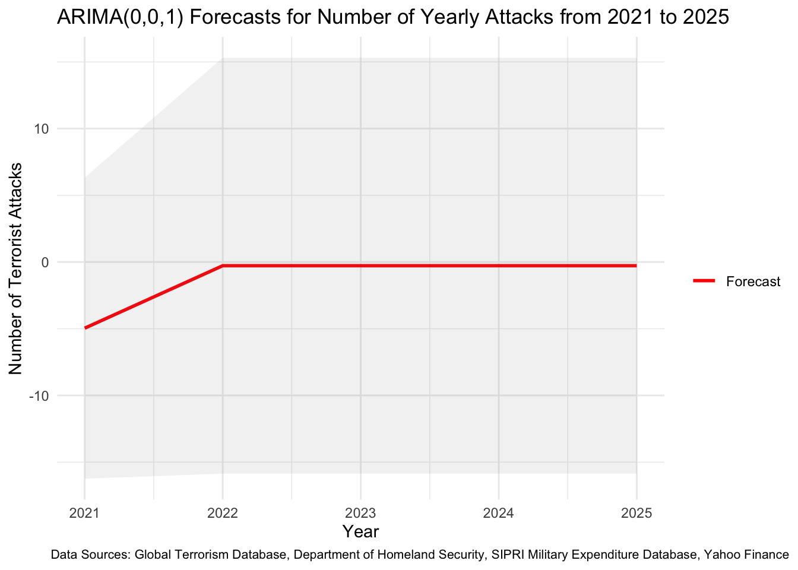
The VAR(1) Model trained on Post-9/11 Attacks data is the best performing model in terms of the predicted forecast. It is the only model that took into account the latter observations in its prediction and predicted based on that increasing trend. Our hypothesis that non-immigrants do not significantly affect the number of yearly terrorist attacks in the US is, therefore, proven through the above analyses.
The ARIMAX model trained on all the years performed significantly worse than the ARIMAX model trained on only Post-9/11 Attacks years. In fact, when adding in Lockheed Martin’s stock price in segment 2 of the analysis (Post-9/11 Attacks), \(Adjusted.R^2\) increases by more than 60% from segment 1 of the analysis, which includes all years (1970-2020) and not Lockheed Martin’s stock price! Although that is the case, none of the predicted forecasts from the ARIMAX models are not as convincing as the VAR models. Moreover, in the ARIMAX models, all the non-immigration variables collected from DHS are non-significant, apart from Pleasure or B-2 Visa entrants in segment 1 (all years included) of the analysis.
In summary, the years prior to the 9/11 Attacks have little to no effect on the forecasts for 2021 to 2025. To gain more accurate forecasts from the VAR model, it is imperative to focus on data post-9/11. The variables that do imply high correlation (determining causation is out of scope of this analysis) to forecasting the yearly number of terrorist attacks in the US are US Military Expenditure both directly on armed forces and weapons contractors, Lockheed Martin and Raytheon Technologies.
Code for this section can be found here